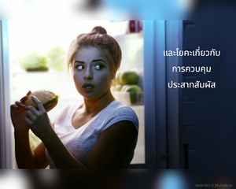
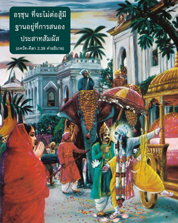
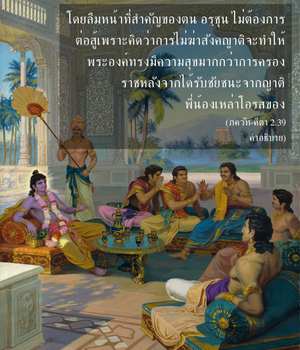

ข้าได้อธิบายความรู้นี้แด่เธอด้วยการวิเคราะห์ศึกษา บัดนี้จงฟัง ข้าจะอธิบายเกี่ยวกับการทำงานโดยไม่หวังผลตอบแทนทางวัตถุ โอ้ โอรสพระนาง ปฺฤถา เมื่อปฏิบัติด้วยความรู้เช่นนี้เธอจะสามารถเป็นอิสระจากพันธนาการของงาน




ตาม นิรุกฺติ หรือพจนานุกรมพระเวท สงฺขฺยา หมายถึง การอธิบายสิ่งต่างๆ อย่างละเอียด สางฺขฺย หมายถึง ปรัชญาที่อธิบายธรรมชาติอันแท้จริงของดวงวิญญาณ และโยคะเกี่ยวกับการควบคุมประสาทสัมผัส คำเสนอของ อรฺชุน ที่จะไม่ต่อสู้มีฐานอยู่ที่การสนองประสาทสัมผัส โดยลืมหน้าที่สำคัญของตน อรฺชุน ไม่ต้องการต่อสู้เพราะคิดว่าการไม่ฆ่าสังคญาติจะทำให้พระองค์ทรงมีความสุขมากกว่าการครองราชหลังจากได้รับชัยชนะจากญาติพี่น้องเหล่าโอรสของ ธฺฤตราษฺฏฺร แนวคิดทั้งสองประการนี้มีฐานอยู่ที่การสนองประสาทสัมผัส ความสุขที่ได้รับจากชัยชนะ และความสุขที่ได้รับจากการเห็นสังคญาติมีชีวิตอยู่ ทั้งสองสิ่งนี้ตั้งอยู่บนฐานแห่งการสนองประสาทสัมผัสของตนเอง จนกระทั่งสูญเสียปัญญาและละเว้นหน้าที่ ฉะนั้น องค์กฺฤษฺณทรงประสงค์จะอธิบายให้ อรฺชุน เห็นว่าการสังหารร่างกายพระอัยกา ดวงวิญญาณนั้นจะไม่ได้ถูกสังหารไปด้วย และอธิบายว่ามวลปัจเจกชีวิตรวมทั้งองค์ภควานฺเองเป็นปัจเจกนิรันดร ทั้งหมดเป็นปัจเจกบุคคลในอดีต เป็นปัจเจกบุคคลในปัจจุบัน และยังคงเป็นปัจเจกบุคคลในอนาคต เพราะว่าสิ่งมีชีวิตทั้งหมดเป็นปัจเจกดวงวิญญาณนิรันดร เราเพียงแต่เปลี่ยนเครื่องแต่งกายในรูปแบบต่างๆ กัน แต่อันที่จริงเรายังคงรักษาความเป็นปัจเจกดวงวิญญาณแม้หลังจากหลุดพ้นจากพันธนาการแห่งเครื่องแต่งกายวัตถุ องค์ศฺรีกฺฤษฺณทรงอธิบายการวิเคราะห์ศึกษาระหว่างดวงวิญญาณและร่างกายอย่างเห็นภาพได้ชัดเจน ความรู้ที่ทรงอธิบายเกี่ยวกับดวงวิญญาณและร่างกายในแง่มุมต่างๆ กันนี้ได้อธิบายที่นี้ว่าเป็น สางฺขฺย ตามพจนานุกรม นิรุกฺติ สงฺขฺยา นี้ไม่มีความสัมพันธ์กับปรัชญา สางฺขฺย ของ กปิล ผู้ไม่เชื่อในองค์ภควานฺ ก่อนหน้า สางฺขฺย ของ กปิล ตัวปลอมนี้ ศฺรีมทฺ-ภาควตมฺ ได้อธิบายถึงปรัชญา สางฺขฺย โดยองค์ภควานฺ กปิล ตัวจริง อวตารขององค์กฺฤษฺณผู้ทรงอธิบายให้พระมารดา เทวหูติ ทรงอธิบายอย่างชัดเจนว่า ปุรุษ หรือองค์ภควานฺทรงตื่นตัว พระองค์ทรงสร้างด้วยการทอดพระเนตรไปที่ ปฺรกฺฤติ ซึ่งเป็นที่ยอมรับในคัมภีร์พระเวทและใน คีตา คัมภีร์พระเวท อธิบายว่าองค์ภควานฺทรงทอดพระเนตรไปที่ ปฺรกฺฤติ หรือธรรมชาติและทรงทำให้มีครรภ์ด้วยปัจเจกละอองวิญญาณ ปัจเจกวิญญาณทั้งหมดทำงานในโลกวัตถุเพื่อสนองประสาทสัมผัส และภายใต้มนต์สะกดของพลังงานวัตถุทำให้พวกเขาคิดว่าตนเองเป็นผู้มีความสุขเกษมสำราญ แนวคิดเช่นนี้จะถูกลากไปจนถึงจุดสุดท้ายแห่งความหลุดพ้น และเมื่อนั้นสิ่งมีชีวิตต้องการเป็นหนึ่งเดียวกับองค์ภควานฺ นี่คือบ่วงสุดท้ายของ มายา หรือความหลงอยู่ในการสนองประสาทสัมผัส และหลังจากการสนองประสาทสัมผัสหลายต่อหลายชาติดวงวิญญาณผู้ยิ่งใหญ่จะศิโรราบต่อองค์ วาสุเทว ศฺรี กฺฤษฺณ ซึ่งทำให้การค้นหาสัจธรรมสูงสุดประสบผลสำเร็จ
อรฺชุน ทรงยอมรับองค์กฺฤษฺณว่าทรงเป็นพระอาจารย์ทิพย์ด้วยการศิโรราบต่อพระองค์ ศิษฺยสฺ เต ’หํ ศาธิ มำ ตฺวำ ปฺรปนฺนมฺ จากนี้ไปองค์กฺฤษฺณจะทรงตรัสเกี่ยวกับวิธีการทำงานใน พุทฺธิ-โยค หรือ กรฺม-โยค หรืออีกนัยหนึ่ง คือ ปฏิบัติการอุทิศตนเสียสละรับใช้เพื่อสนองประสาทสัมผัสขององค์ภควานฺเท่านั้น พุทฺธิ-โยค นี้บทที่สิบ โศลกที่สิบ ได้อธิบายไว้อย่างชัดเจนว่า เป็นการสัมพันธ์กับองค์ภควานฺ ผู้ทรงประทับเป็น ปรมาตฺมา อยู่ในหัวใจของทุกคนโดยตรง แต่การติดต่อสัมพันธ์กันเช่นนี้จะไม่เกิดขึ้นหากปราศจากการอุทิศตนเสียสละรับใช้ ฉะนั้น บุคคลผู้สถิตในการอุทิศตนเสียสละ หรือการรับใช้ด้วยความรักทิพย์แด่องค์ภควานฺในกฺฤษฺณจิตสำนึกจะบรรลุถึงระดับ พุทฺธิ-โยค นี้ด้วยพระกรุณาธิคุณโดยเฉพาะขององค์ภควานฺ และทรงตรัสว่าผู้ปฏิบัติการอุทิศตนรับใช้ด้วยความรักทิพย์อยู่เสมอเท่านั้นที่พระองค์จะทรงให้รางวัลความรู้บริสุทธิ์แห่งการอุทิศตนเสียสละในความรัก เช่นนี้สาวกจะสามารถบรรลุถึงองค์ภควานฺได้โดยง่ายดายในอาณาจักรของพระองค์ด้วยความปลื้มปีติสุข
ดังนั้น พุทฺธิ-โยค ที่กล่าวไว้ในโศลกนี้คือการอุทิศตนเสียสละรับใช้องค์ภควานฺ และคำว่า สางฺขฺย-โยค ที่กล่าวถึงในที่นี้ไม่มีความเกี่ยวข้องกับ สางฺขฺย-โยค ที่ไม่เชื่อในองค์ภควานฺซึ่ง กปิล ตัวปลอมเป็นผู้ประกาศ ฉะนั้น เราไม่ควรเข้าใจผิดคิดว่า สางฺขฺย-โยค ที่กล่าวในที่นี้มีความสัมพันธ์กับ สางฺขฺย ที่ไม่เชื่อในองค์ภควานฺ หรือปรัชญา สางฺขฺย นี้มีอิทธิพลใดๆ ในขณะนั้น หรือคิดว่าองค์ศฺรีกฺฤษฺณทรงเอาใจใส่มาตรัสถึงปรัชญาคาดคะเนที่ไร้องค์ภควานฺ เช่นนี้องค์ กปิล ทรงอธิบายปรัชญา สางฺขฺย ที่แท้จริงไว้ใน ศฺรีมทฺ-ภาควตมฺ แม้ สางฺขฺย นั้นจะไม่เกี่ยวข้องกับประเด็นในปัจจุบัน สางฺขฺย ในที่นี้หมายถึงการวิเคราะห์อธิบายถึงร่างกายและดวงวิญญาณ องค์กฺฤษฺณทรงวิเคราะห์อธิบายถึงดวงวิญญาณเพื่อนำอรฺชุน ให้มาถึงจุด พุทฺธิ-โยค หรือ ภกฺติ-โยค ฉะนั้น สางฺขฺย ขององค์กฺฤษฺณ และ สางฺขฺย ของ กปิล ดังที่ได้อธิบายไว้ใน ภาควต เป็นหนึ่งเดียวและเหมือนกัน ทั้งคู่คือ ภกฺติ-โยค ดังนั้น องค์กฺฤษฺณตรัสว่าผู้ด้อยปัญญาเท่านั้นที่เห็นว่า สางฺขฺย-โยค และ ภกฺติ-โยค ไม่เหมือนกัน (สางฺขฺย-โยเคา ปฺฤถคฺ พาลาห์ ปฺรวทนฺติ น ปณฺฑิตาห์)
แน่นอนที่ สางฺขฺย-โยค ที่ไม่เชื่อในองค์ภควานฺจะไม่มีความสัมพันธ์กับ ภกฺติ-โยค แต่ผู้ด้อยปัญญายังอ้างว่า สางฺขฺย-โยค และ ภกฺติ-โยค ที่ไม่เชื่อในองค์ภควานฺได้ถูกอ้างอิงไว้ใน ภควัท-คีตา
ฉะนั้น เราควรเข้าใจว่า พุทฺธิ-โยค หมายถึง การทำงานในกฺฤษฺณจิตสำนึกด้วยความปลื้มปีติสุข และด้วยความรู้อย่างสมบูรณ์ในการอุทิศตนเสียสละรับใช้ ผู้ทำงานเพื่อให้องค์ภควานฺทรงพอพระทัยเพียงอย่างเดียว ไม่ว่างานนั้นจะยากลำบากแค่ไหน เป็นการทำงานภายใต้หลักธรรมของ พุทฺธิ-โยค และจะพบว่าตนเองอยู่ในความปลื้มปีติสุขทิพย์เสมอ ด้วยการปฏิบัติทิพย์เช่นนี้เขาจะบรรลุความเข้าใจทิพย์ทั้งหมดโดยปริยายด้วยพระกรุณาธิคุณขององค์ภควานฺ ดังนั้น ความหลุดพ้นของเขามีความสมบูรณ์อยู่ในตัว โดยไม่ต้องพยายามเป็นพิเศษเพื่อให้ได้รับความรู้ มีข้อแตกต่างกันมากระหว่างการทำงานในกฺฤษฺณจิตสำนึก และการทำงานเพื่อหวังผลประโยชน์ทางวัตถุ โดยเฉพาะที่เกี่ยวกับการสนองประสาทสัมผัสเพื่อบรรลุผลทางครอบครัว หรือความสุขทางวัตถุ ฉะนั้น พุทฺธิ-โยค จึงเป็นคุณสมบัติทิพย์แห่งงานที่เราปฏิบัติ